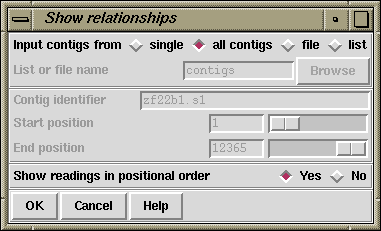

This function (which is available from the gap4 View menu) is used to show the relationships of the gel readings in the database in three ways.

In the above illustration, a single contig, all contigs, a file or list of contigs can be selected. For a single contig, the contig identifier and range selector becomes enabled. Choosing a file or list enables the "browse" button which will invoke either the file or list browser respectively. When "all" contigs is selected a further choice is available: whether to `Show readings in positional order'. This question determines whether to output in method 1 (No) or 2 (Yes) listed above.
The function is particularly useful for creating files or lists of
reading names. To create a list of reading names run Show Relationships
to produce the desired output to the Output Window. Then either use cut
and paste from this window to a list editor, or use the right mouse
button in the output window to request the "Output to list" option. In
this latter case the header "CONTIG LINES" and "GEL LINES"
lines should be removed (although most functions will happily ignore,
with warnings, a list containing unknown reading names).
In the output window the reading names are underlined, indicating that they are hyperlinks. Double clicking on a name with the left mouse button will bring up the contig editor showing the start of that sequence, or it will move an existing contig editor to display that position. (You may wish to turn off the "Scroll on output" button if you do not wish the text output window to scroll to the bottom as it displays the "Edit contig" title.) Clicking on a reading name with the right mouse button will bring up a popup menu containing Edit contig, Template display, List reading notes and List contig notes.
Below is an example showing a contig from position 1 to 689. The left gel reading is number 6 and has archive name HINW.010, the rightmost gel reading is number 2 and is has archive name HINW.004. On each gel descriptor line is shown: the name of the archive version, the gel number, the position of the left end of the gel reading relative to the left end of the contig, the length of the gel reading (if this is negative it means that the gel reading is in the opposite orientation to its archive), the number of the gel reading to the left and the number of the gel reading to the right.
CONTIG LINES
CONTIG LINE LENGTH ENDS
LEFT RIGHT
48 689 6 2
GEL LINES
NAME NUMBER POSITION LENGTH NEIGHBOURS
LEFT RIGHT
HINW.010 6 1 -279 0 3
HINW.007 3 91 -265 6 5
HINW.009 5 137 -299 3 17
HINW.999 17 140 273 5 12
HINW.017 12 193 265 17 18
HINW.031 18 385 -245 12 2
HINW.004 2 401 -289 18 0